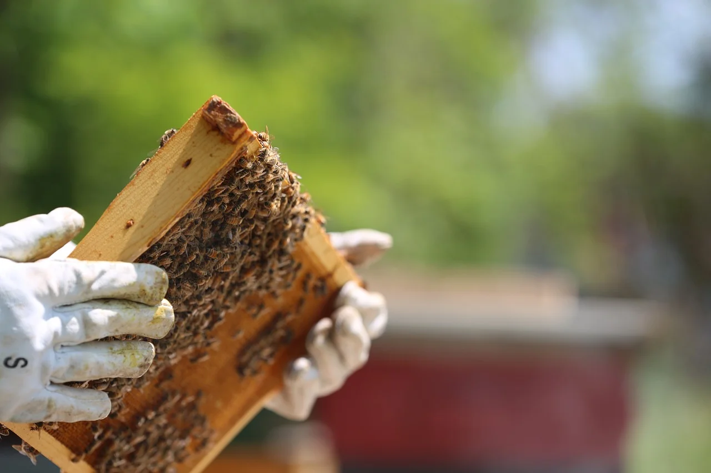

<section class="section">
    <div class="wrapper-container">
        <div class="main">
            @@include("../html-parts/_nav-menu.html")
            <div class="main__content-block">
                <!--  -->
                <div class="bg-start-block">
                    <div class="item-block">
                        
                    </div>
                </div>
                <!--  -->
                <div class="contents">
                    <h2>Тут будет наша история.</h2>
                </div>
            </div>
        </div>
    </div>
</section>